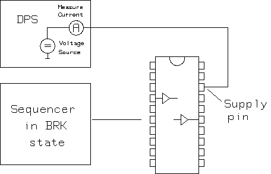

StandbyCurrent
This test method measures the current supplied to a DUT while it is in an inactive state.

If not already connected, the test system is set to the CONNECTED state, with the AC relays closed, the sequencer set to BREAK and the DPS set to the voltage programmed in Level Setup. If measure with termination has not been selected, any term, load, or clp type terminated pins are disconnected.
The current flowing through the DPS pins specified in the pin list is measured by the internal DPS current measurement unit.
If termination is off, the previously disconnected terminated pins are reconnected via the AC relays when the test is finished. The test system is left in the CONNECTED state, the sequencer is left in the break state.
Test result is pass when it is in the pass limit range. The measured current value is always an unsigned real value.
This test method supports test table. But you need to enter the test names manually in the parameter. You can use both test table and testflow limits in a testflow. The test table has higher priority than testflow limits. If a test name used in the test flow is defined in both test table and testflow limits, the value defined in the test table will be used.
Dependencies
- Only DPS pins with the same polarity can be entered in the pin list. If you try to enter DPS pins with different polarities, an error message is returned and execution of the test method is aborted.
- io pins with h or l termination remain connected during the test.
Parameter |
Type |
Description |
|---|---|---|
dpsPins |
PinString |
pins to be tested This can be @ for all applicable pins, or any number of applicable single pins. Valid pin types include DPS pins. |
samples |
int |
Samples for the DPS measurement. The default is 16. This value must be a positive integer. |
termination |
string |
Enable/disable termination. ON - measure terminated pins. OFF - disconnect terminated pins. |
settlingTime |
SpecValue |
The extra settling time to wait. Default is 0[ms]. |
testName |
string |
The test names to be used as limits. Default is
If you want to use the test names defined in the test table or testflow limits, type in the test names manually. Make sure the test names are in the Test name column of the test table (Refer to Structure of a TMLimits CSV file) or in the Test Name column of Tests page of Flow Data Editor. |
output |
string |
Controls how to output the per pin test result. It can be:
ShowFailOnly: Only outputs the failed pin result to the report window. |
Limit
passCurrLimit_uA |
The pass range of the measured current |
Implementation pseudo code
IF not already connected THEN connect DUT ENDIF IF terminated off THEN disconnect terminated pins measure current on the specified DPS pins connect the terminated pins ELSE measure current on the specified DPS pins ENDIF datalog test results
Functional changes
- Introduced before SmarTest 6.3.2
- SmarTest 6.5.0: Change parameter type of dpsPins to PinString for UTM library.
- SmarTest 6.5.4: New parameter settingTime.
- SmarTest 7.0.3: Classic test method library is removed.
- SmarTest 7.1.1: Test table is supported in TML 2.1.1.
- SmarTest 7.1.1: Mixed usage of test table and testflow limits in one testflow is supported in TML 2.1.1.
- SmarTest 7.1.1: New parameter testName is added in TML 2.1.1.
- SmarTest 7.2.1: New option ShowFailOnly for the parameter output in TML 2.2.0.